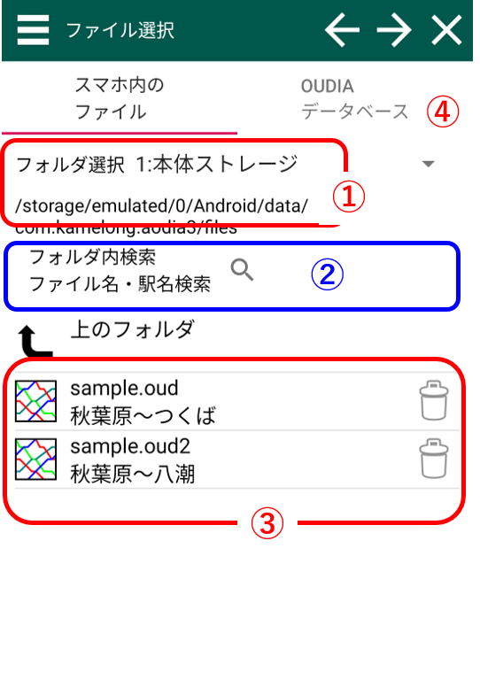

ファイルを開く
スクショの番号の対応した説明があります。スマホ内ファイルから開く
①：スマホ内のメインフォルダ選択
「AOdiaアプリデーター保存フォルダ」、「ダウンロードフォルダ」を選ぶことができます。 その下には現在のフォルダのアドレスが表示されています。②：ダイヤファイル検索欄
ここに路線名・駅名を入れると、条件にマッチするファイルが表示されます。③：ファイル表示欄
各ファイルに対して、ファイル名と路線開始駅・終了駅が表示されています。 ファイルをタップするとそのファイルを開きます。 このボタンを押すとファイルが削除されます
このボタンを押すとファイルが削除されます